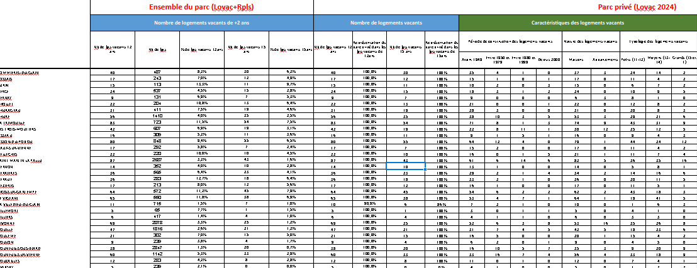
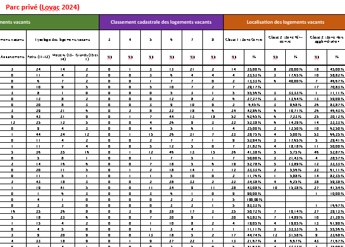
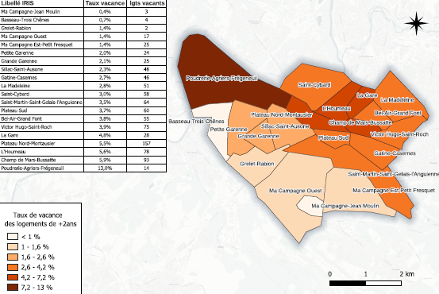
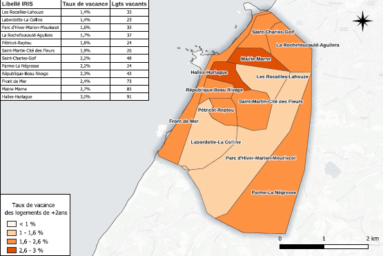
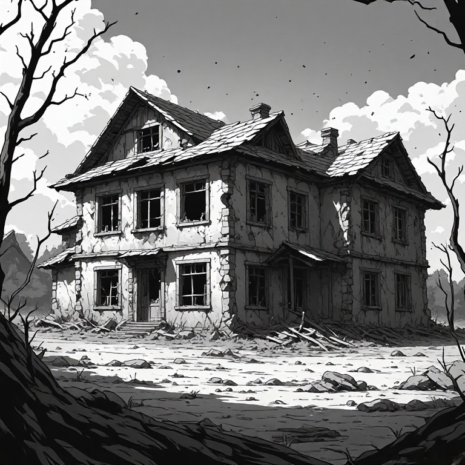
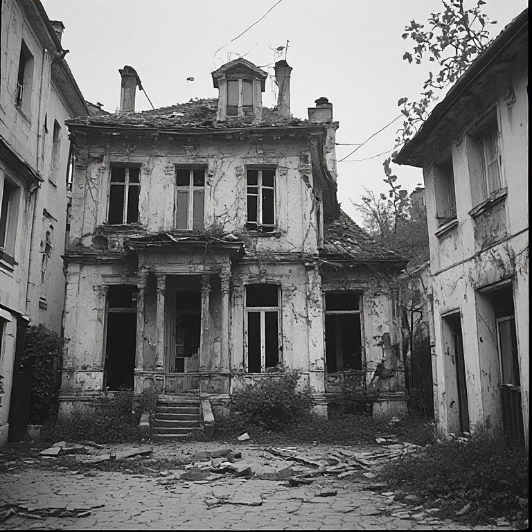
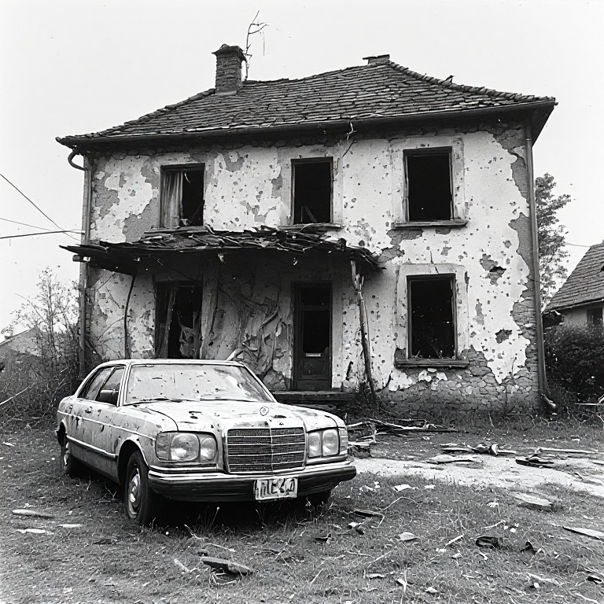
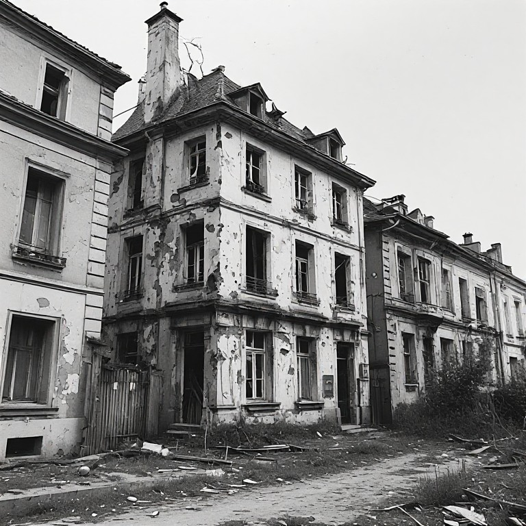

La vacance dans le logement en Nouvelle-Aquitaine
Analyse quantitative et statistique
1. Contexte et objet de l’étude
La vacance est un enjeu majeur du logement aujourd’hui largement pris en compte dans les politiques locales pour la production de logements, mais une vacance structurelle, longue (2 ans et plus) persiste souvent sur les territoires : elle n’est pas négligeable. Cette vacance est conséquente sur les villes moyennes hors littoral, les petites villes et dans la ruralité.
Dans un contexte général de nécessité de produire des logements dans l’existant afin de garantir une meilleure gestion économe du foncier, la résorption de la vacance s’impose ainsi toujours comme un enjeu majeur.
La présente étude élaborée conjointement entre le Cerema et la DREAL Nouvelle Aquitaine a vocation à présenter un état des lieux de la vacance sur la région Nouvelle-Aquitaine sur la base LOVAC actualisée du Ministère des Finances, suite aux évolutions de cette dernière (mise en place d’une refonte du calcul avec l’outil «GMBI» Gestion de mon bien immobilier d’après la déclaration des propriétaires fonciers et évolution des méthodes de recensement). L’étude présente la situation régionale, les tendances générales et les évolutions de la vacance de longue durée ces dernières années puis une analyse fine et territorialisée de la vacance avec des documents complémentaires (non joints dans le présent document) :
• Une matrice (document type calc/excel) détaillant les chiffres LOVAC de la vacance selon les caractéristiques des logements (EPCI et niveau communal) :
Les caractéristiques des logements vacants présentés dans la matrice :
❖ nombre et part de logements vacants depuis plus de 2 ans,
❖ durée de vacance,
❖ typologie du parc (type de logement, année de construction)
❖ localisation (à définir en lien avec le maître d’ouvrage)
❖ qualité du bâti
❖ …


• Une cartographie de la vacance pour 70 villes, à l’échelle des quartiers



• Deux documents annexes : un premier qui propose une liste la plus exhaustive possible des outils et leviers existants pour lutter contre la vacance (repérage, outils opérationnels, coercitifs, financiers, procédures, outils programmatiques…). Un second document annexe présentant un court guide court à destination des DDTM dans leur dialogue à destination des élus (pourquoi lutter contre la vacance, quel type de vacance, quels outils et quelle démarche engager ?). Ces deux derniers documents ne sont disponibles que pour les services de l’État.
Une étude qui cible la vacance de longue durée, dite structurelle : définitions
La vacance structurelle correspond à une inoccupation qui se prolonge en raison d’obstacles à l’occupation ou à la remise sur le marché du logement. Ces obstacles peuvent tenir au bien lui-même — dégradation, travaux importants, caractéristiques inadaptées à la demande —, au contexte immobilier local — demande insuffisante notamment — ou à la situation du propriétaire : succession bloquée, difficultés financières, réticence à louer ou maintien volontaire du bien hors du marché. Elle ne résulte donc pas seulement de la rotation ordinaire des occupants. La notion de vacance strucurelle se rapproche de la notion de vacance de longue durée (plus de deux ans) qui est une catégorie définie par la durée d’inoccupation, plutôt que directement par ses causes. Dans LOVAC, le seuil de plus de deux ans est retenu pour repérer les logements du parc privé présumés relever de la vacance structurelle, notamment pour orienter les actions de remise sur le marché.
Ce seuil constitue une convention de repérage, pas une frontière absolue : un logement vacant depuis moins de deux ans peut déjà présenter des blocages structurels ; inversement, dépasser deux ans ne suffit pas à déterminer la cause de la vacance. Il est à noter que, dans les fichiers fiscaux, la vacance de plus de deux ans correspond à un logement identifié comme vacant à au moins trois 1er janvier consécutifs. Cette observation ne garantit pas l’absence de toute occupation entre ces dates dans LOVAC.
La vacance frictionnelle, ou vacance de rotation, correspond à l’inoccupation temporaire d’un logement entre deux occupants : départ d’un ménage, recherche d’un nouveau locataire ou acquéreur, vente, délai d’installation et éventuelle remise en état. Généralement de courte durée — quelques jours à quelques mois —, elle accompagne le fonctionnement du marché et la mobilité résidentielle. Elle ne traduit pas nécessairement une difficulté durable à remettre le logement en occupation.


2. L’évolution de la vacance globale des logements
2.1 Précautions méthodologiques
Deux sources complémentaires sont mobilisées dans cette étude : les données du recensement de la population de l’Insee pour analyser l’évolution de la vacance totale, et les données LOVAC pour caractériser la vacance du parc privé à un millésime donné. Des travaux locaux peuvent compléter cette approche, notamment par le croisement de sources et la vérification des situations sur le terrain. Le recensement INSEE ne renseigne toutefois pas la durée d’inoccupation : il ne permet donc pas, à lui seul, de distinguer la vacance de rotation des situations durablement bloquées.
Les comparaisons brutes entre les millésimes LOVAC traversant les ruptures de série ne sont pas pertinentes pour mesurer l’évolution de la vacance. Le passage aux déclarations d’occupation GMBI à partir du millésime 2024, puis les modifications de sélection des logements intervenues en 2025, affectent leur comparabilité. Cette réserve concerne aussi bien l’échelle nationale que les échelles locales.
Le recensement constitue ainsi la principale référence commune retenue ici pour l’analyse des tendances. Ses résultats doivent néanmoins être interprétés en tenant compte des évolutions de la collecte.